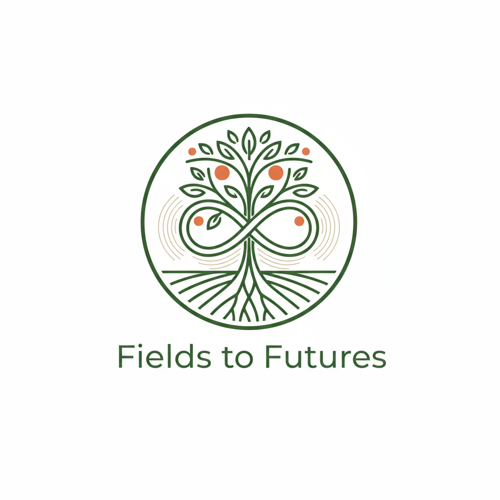

Our Programs
Over 20 programs serving children, youth, adults, families, and seniors across the South Okanagan. Virtually all services are confidential and provided at no cost, with Fee for Service counselling also available.
Programs for Every Stage of Life
Desert Sun has been delivering free, professional programs in the South Okanagan for over 30 years. Whatever you’re facing, we have a program to help.
Activities & Events
Stay up to date with Desert Sun’s programs, activities, and community events across Oliver, Osoyoos, and Okanagan Falls.
Calendar updates automatically when new activities are added. All times are local to the South Okanagan.
Crisis & Safety
When safety is at risk, Desert Sun is available for support. Our crisis and shelter programs provide confidential, free support for women, children, and youth in the South Okanagan.
Cindy Taylor Safe Home
Emergency ShelterA confidential emergency shelter providing safe, supportive housing for women and their children who are leaving abusive situations. The safe home is pet-friendly and operates as a dry facility. All services are free of charge.
Learn more about the Cindy Taylor Safe Home →Women’s Crisis Line
Crisis SupportA dedicated phone line providing support, information, and referrals for women experiencing or at risk of family violence. Staffed by trained professionals who can connect you to the right resources.
Learn more about the Crisis Line →Youth Shelter
Youth SafetyA safe, supportive environment for youth who are at risk of or experiencing homelessness and are on a youth agreement with MCFD. The Youth Shelter provides food, clothing, and shelter free of charge — helping to break the cycle of trauma and give young people a stable foundation to rebuild from.
Learn more about the Youth Shelter →Counselling Programs
Desert Sun offers free, confidential counselling for men, women, children, and youth. We also offer Fee for Service counselling for people whose needs cannot be met within our Ministry of Justice Mandate. Our qualified counsellors provide a safe space to work through trauma, relationship challenges, and personal struggles.
Men’s Counselling
Individual & GroupIndividual and group counselling for men looking to improve relationships, reduce stress, manage conflict, and develop healthier communication skills. A safe, non-judgmental space to work toward positive change.
Learn more about Men’s Counselling →Stopping the Violence Counselling
Adults 19+Free counselling for women age 19 and over addressing childhood abuse, adult relationship trauma, sexualized violence, domestic violence, and other personal challenges. Our counsellors provide compassionate, trauma-informed support.
Learn more about Stopping the Violence Counselling →Child & Youth Counselling (PEACE Program)
Ages 3–18Free counselling for children and youth ages 3 to 18 who have been exposed to intense family conflict or emotional abuse. We work in partnership with School District 53 and the Osoyoos Indian Band to reach youth where they are.
Learn more about Child & Youth Counselling →Fee for Service Counselling
Paid SessionsA paid program designed for individuals who may not qualify for our free counselling services but are seeking professional mental health support. Ideal for those experiencing grief, anxiety, depression, relationship challenges, or addiction-related concerns — as well as those looking to strengthen coping skills and build resilience. Clients receive a complimentary 15-minute consultation, with subsequent sessions offered at a competitive rate.
Learn more about Fee for Service Counselling →Parenting Supports
Parenting is one of the most important and challenging roles there is. Desert Sun offers evidence-based parenting programs that strengthen families and support parents and caregivers at every stage.
Nobody’s Perfect
Group ProgramA nationally recognized parenting program for parents and caregivers of children ages birth to 5. Learn practical skills, share experiences, and build confidence in a supportive group setting.
Learn more →DS Cooks
Parenting ProgramA welcoming place for parents and caregivers to meet, share, and learn. Our teaching Community Kitchen lets participants cook together, enjoy a hot lunch, and take nutritious meals home. We also provide education on nutrition, car seats, and free prenatal vitamins.
Learn more →Mother Goose
Early Language & BondingA group experience for parents and children ages 18 months to 3 years featuring rhymes, songs, and stories. Mother Goose creates positive family connections and gives children healthy early experiences with language and communication.
Learn more →Circle of Security
International Parenting StrategyAn internationally recognized parenting workshop that teaches caregivers how to read and respond to their children’s cues — building secure attachment and enhancing their parenting style.
Learn more →Roots of Empathy
Classroom ProgramAn evidence-based classroom program delivered all over the world and developed in Ontario that helps children develop empathy and emotional literacy. Using a baby as the tiny teacher, children learn about feelings, caring, and connection — resulting in more caring classrooms and reduced aggression.
Learn more →Supervised Visitation & Exchange
Child SafetyProvides a safe, neutral location for court-ordered parent-child visits and custody exchanges. Our trained staff ensure the safety and wellbeing of children and all parties involved.
Learn more →Seniors Programs
Our seniors programs support older adults in living with dignity, independence, and connection in the South Okanagan community.
Better at Home
Home SupportNon-medical home support services helping seniors remain safely in their own homes, including yard work, light housekeeping, and transportation assistance.
Learn more →TAPS — Therapeutic Activation Programs for Seniors
Wellness & SocializationTAPS was developed to prevent isolation, loneliness and depression in our seniors. TAPS provides an opportunity for seniors to gather and connect, participate in crafts, games, chair yoga and have a healthy, homemade meal together. The program runs 4 days a week and transportation is provided to the TAPS location. TAPS puts back joy in the lives of our seniors.
Learn more →Tablet Lending Library
Free LoanFree short-term tablet loans with basic iPad training for seniors, newcomers, and low-income community members to help them stay connected online.
Learn more →Computer Tutor
Free SessionsFree one-on-one computer tutoring available at local libraries in Oliver, Osoyoos, and OK Falls, Tuesdays, Wednesdays, and Fridays.
Learn more →Community Lift Program
Accessible TransportationCommunity Lift is a vital transportation service designed to connect more seniors and vulnerable adults to medical services to ensure better health outcomes for our clients. This service provides door-to-door pickup and drop-off and is an affordable, accessible bus transportation program that runs Monday through Thursday for seniors and people with mobility challenges in the South Okanagan.
Learn more →Social Meals Program
Nutrition & ConnectionSocial Meals is more than sharing a meal — it is about connection, dignity and community. Weekly home-style meals in Oliver and Osoyoos provide seniors with nutritious food and meaningful social connection in a welcoming space.
Learn more →Community Connector
Community ConnectionThis program bridges the gap between health care and social care by connecting seniors to community resources and social supports.
Learn more →Elder Abuse Prevention
Safety & AwarenessEducation, awareness, and support services focused on the prevention of elder abuse in all its forms. We provide information to seniors, families, and the broader community, and connect those affected with appropriate help.
Learn more →Affordable Housing
BC Housing PartnershipDesert Sun manages 18 affordable housing units in Oliver in partnership with BC Housing, providing stable homes for seniors and low-income individuals.
Learn more →Men’s Shed
Social & Creative WellnessA welcoming workshop space in Oliver where men gather to work on projects, share skills, and build community. This program provides a communal, collaborative gathering space for men to socialize and provide peer support. Equipped with woodworking tools and a 3D printer.
Learn more →Community Support Programs
Beyond our core programs, Desert Sun plays an active role in making the South Okanagan a more connected, informed, and supported community for everyone.
Community Resource Navigation
Referral & ConnectionsNot sure which program is right for you? Our staff can help you identify the right supports — whether within Desert Sun or elsewhere in the community. We connect individuals and families to the services they need.
Get help finding the right support →Community Education & Awareness
PreventionDesert Sun delivers public awareness and community education initiatives on topics including family violence prevention, mental health, healthy relationships, and elder abuse. Presentations are available for schools, workplaces, and community groups.
Book a presentation →Community Support Worker
Partnership with Interior HealthThis program is in partnership with Interior Health. Desert Sun provides one Community Support Worker (CSW) to each of the communities of Oliver and Osoyoos to work in local family practices, providing socio-emotional support to patients as part of the new Team Based Primary Care Network. CSWs offer outreach-based support — helping with treatment plans, psychosocial support, stabilizing vulnerable patients, completing government forms, and connecting patients and their families to life-skills support and community services.
Volunteer Program
Get InvolvedDesert Sun values the dedication of individual and group volunteers who support our community fundraisers and events — including the Empty Bowls and Baskets campaign. Volunteers play an essential role in the sustainability of our programs.
Volunteer with Desert Sun →Community Fundraising Events
EventsDesert Sun hosts annual fundraising events that bring the South Okanagan community together to support free programs for those in need. Join us for our Empty Bowls and Baskets campaign and other community events throughout the year.
See upcoming events →Fields to Futures
Fields to Futures is Desert Sun’s freeze-drying social enterprise, turning locally grown produce and foods into high-quality freeze-dried products. Every purchase directly supports Desert Sun’s free programs for individuals and families in the South Okanagan.
Freeze-drying preserves the full nutritional value, flavour, and texture of fresh food — with no additives and a long shelf life. Our products are made locally and available for purchase online or through Desert Sun.
When you shop Fields to Futures, you are not just buying a great product — you are investing in your community and helping us keep our programs free for everyone who needs them.

Shop Fields to Futures
Browse our current products below. Click any item to view details and add to cart.
All proceeds support Desert Sun’s free community programs. Secure checkout powered by Fields to Futures.
Virtually All Desert Sun Programs Are Free
We believe financial barriers should never stand between a person and the help they need. Virtually all programs Desert Sun offers are provided at no cost to clients, with Fee for Service counselling also available for needs that extend beyond our funded programs. All services are confidential. No referral is required to access most programs — simply call or email us to get started.
Help us help our community
Desert Sun’s programs are free because of the generous support of funders, donors, and volunteers. Consider making a contribution today.